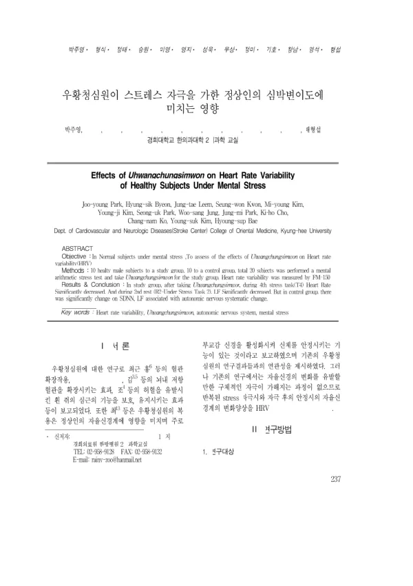

우황청심원이 스트레스 자극을 가한 정상인의 심박변이도에 미치는 영향
Park Jy, Byeon Hs, Leem Jt, Kwon Sw, Kim My, Kim Yj, Park Su, Jung Ws, Park Jm, Cho Kh, Ko Cn, Kim Ys, Bae Hs
The Journal of Internal Korean Medicine 237-243

첫 장 · 오픈액세스First page · open access
논문 소개Summary
정신적 스트레스를 받은 정상인에게 우황청심원이 심박변이도를 어떻게 바꾸는지 본 연구입니다. 건강한 남성 스무 명을 열 명씩 두 군으로 나누어 한쪽에만 우황청심원을 먹이고, 암산 스트레스 과제를 반복하며 FM-150 으로 심박변이도를 쟀습니다. 복용군에서는 네 번째 스트레스 과제 때 심박수가 유의하게 줄었고, 두 번째 안정 구간에서 저주파 성분이 유의하게 줄었습니다. 다만 초록은 대조군에서도 SDNN 과 저주파 성분이 자율신경 변화와 함께 움직였다고 적어, 두 군의 차이를 초록만으로는 가릴 수 없습니다. 자극을 실제로 가한 상태에서 이 처방의 자율신경 반응을 본 초기 연구입니다.
How Uhwangchungsimwon changes heart rate variability in healthy people placed under mental stress. Twenty healthy men were divided into two groups of ten, only one of which took the prescription, and heart rate variability was measured on an FM-150 device through repeated mental arithmetic stress tasks. In the treated group heart rate fell significantly during the fourth stress task, and the low-frequency component fell significantly during the second rest period. The abstract also states that SDNN and the low-frequency component changed in the control group alongside autonomic change, so the difference between the two groups cannot be settled from the abstract alone. This is an early attempt to observe the autonomic response to this prescription under an actual applied stressor.
인용Cite
Park Jy, Byeon Hs, Leem Jt, Kwon Sw, Kim My, Kim Yj, Park Su, Jung Ws, Park Jm, Cho Kh, Ko Cn, Kim Ys, Bae Hs. 우황청심원이 스트레스 자극을 가한 정상인의 심박변이도에 미치는 영향. The Journal of Internal Korean Medicine. 2009:237-243.